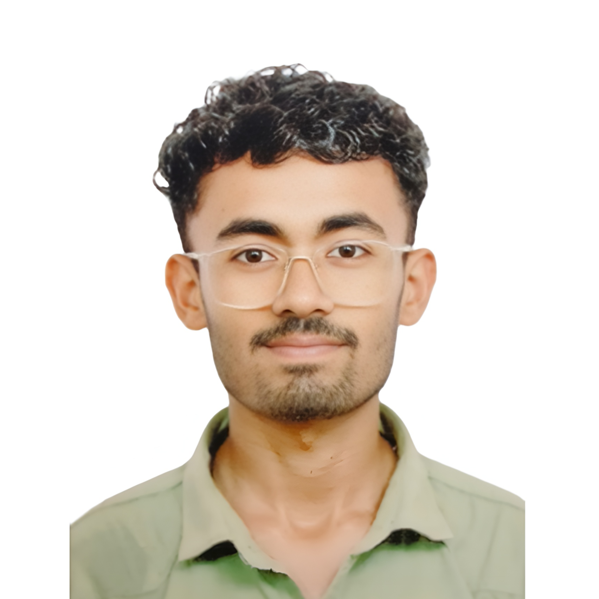

Designing visuals, crafting stories, and building creative digital experiences.
Computer Instructor and English Honours student with a strong interest in creative technology, visual storytelling, and digital experimentation. My work lies at the intersection of design, photography, writing, and emerging AI tools, where I explore different ways of transforming ideas into visual and digital experiences.
Over the years, I have developed hands-on experience in graphic design, poster and magazine-style layouts, photography, and photo editing, using tools such as Canva, Adobe Photoshop, and Adobe Lightroom. I also experiment with AI-powered creative tools, including AI image generation and generative fill, to explore new possibilities in digital art and visual content.
Alongside creative work, I enjoy exploring the technical side of digital systems. I work with HTML, CSS, and Python, and build small electronics and DIY technology projects using Arduino and Raspberry Pi, combining creativity with practical technology.
As a Computer Instructor and Technical Assistant, I have trained 60+ students in basic computing and MS Office, while developing strong communication, troubleshooting, and problem-solving skills.
Beyond technology and design, I enjoy writing poetry and short stories, often exploring themes of life and human emotions, which further strengthens my passion for storytelling and creative expression.
Currently, I am focused on expanding my work in AI-assisted creativity, visual design, and technology-driven creative projects, while continuously learning and experimenting at the intersection of design, storytelling, and digital innovation.
Block Level Institute for Rural Skill Acquisition (BIRSA)
Under Jharkhand Skill Development Mission Society (JSDMS)
August 2025 – Present